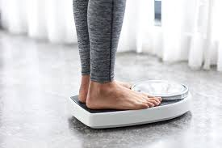

Tips of pregnancy care
Getting a good care before, during, and after pregnancy for a woman is very important. It help to keep the baby and mum in a healthy life.
How much weight should I gain during pregnancy?
Talk to your doctor about how much weight you should gain. It is different for everyone, but most women should gain about 25 to 30 pounds. If you are underweight when you get pregnant, you may need to gain more. If you are overweight, you may need to gain less.
Pregnancy Weight Gain Calculator
Can I take medicine?
Check with your doctor before taking any medicine. This includes prescriptions, pain relievers, and over-the-counter medicines. Some medicines can cause birth defects, especially if taken during the first 3 months of pregnancy.
Can I take vitamins?
Pregnant women should take at least 400 micrograms (mcg) of folic acid each day. It can help prevent problems with your baby’s brain and spinal cord. Ask your doctor if you need more than 400 mcg. It is best to start taking folic acid before you get pregnant. You can get folic acid from taking a prenatal vitamin. You should take this every day. Do not take other vitamins or supplements without your doctor approval.
What should I eat?
Eating a balanced diet is one of the best things you can do for yourself and your baby. Be careful of the following foods and drinks during pregnancy:*Meat, eggs, and fish.
Food that is not fully cooked can put you at risk for an Do not eat more than 2 or 3 servings of fish per week (including canned fish). Do not eat shark, swordfish, king mackerel, or tilefish. These fish have high levels of mercury, which can harm your baby. If you eat tuna, make sure it is light tuna. Do not eat more than 6 ounces of albacore tuna and tuna steaks per week. It is safe to have 12 ounces of canned light tuna per week.*Fruit and vegetables.
Wash all produce before eating it. Keep cutting boards and dishes clean. Dairy. Eat 4 or more servings of dairy each day. This will give you enough calcium for you and your baby. Do not drink unpasteurized milk or eat unpasteurized milk products. These may have bacteria that can cause infections. This includes soft cheeses such as Brie, feta, Camembert, and blue cheese, or Mexican-style cheeses, such as queso fresco.
*Sugar substitutes.Some artificial sweeteners are okay in moderation. These include aspartame (Equal / NutraSweet) and sucralose (Splenda). If you have phenylketonuria (PKU), do not use aspartame at all. Caffeine. Do not drink more than 1 or 2 cups of coffee or other drinks with caffeine each day.

How long can I keep working?
How late you work in pregnancy varies for each person. Your job and work environment play a big role. For instance, radiation, lead and other materials, such as copper and mercury, can be harmful to your baby. If your job is active, you may not be able to work as late. Desk jobs are not thought to cause harm to your baby. However, you should not rest a computer on your stomach or uterus. Your overall health also plays a part in how late you work. If you are at risk of certain issues or preterm labor, you may be on bed rest.